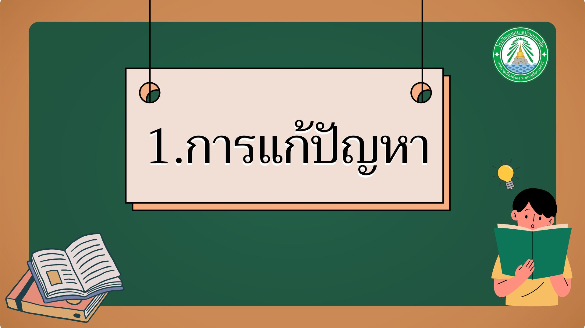

หน่วยที่ 1: การแก้ปัญหา
การแก้ปัญหา

กระบวนการแก้ปัญหา
การแก้ปัญหาเป็นกระบวนการสำคัญในการคิดเชิงคำนวณ โดยมีขั้นตอนหลักดังนี้:
ขั้นตอนที่ 1
การระบุปัญหา
ทำความเข้าใจและกำหนดขอบเขตของปัญหาอย่างชัดเจน
ขั้นตอนที่ 2
การวิเคราะห์สาเหตุ
ค้นหาสาเหตุที่แท้จริงของปัญหา
ขั้นตอนที่ 3
การกำหนดเป้าหมาย
ตั้งเป้าหมายที่ชัดเจนในการแก้ปัญหา
ตัวอย่างจากชีวิตประจำวัน
การดำเนินชีวิตของคนเราต้องพบปัญหามากมาย หลายปัญหาที่พบสามารถแก้ปัญหาได้ด้วยตนเอง เช่น:
- การลืมสิ่งของที่จะนำไปโรงเรียน
- การเดินทางไปโรงเรียนแล้วฝนตก
อาจแก้ปัญหานี้ได้ด้วยการเขียนข้อความเตือนไว้ในตำแหน่งที่เห็นชัดเจนก่อนออกจากบ้าน
กิจกรรมฝึกทักษะ
กิจกรรม: ระบุปัญหาในชีวิตประจำวัน
ให้นักเรียนลองระบุปัญหาที่พบในชีวิตประจำวันของตนเอง พร้อมทั้งอธิบายสาเหตุของปัญหา